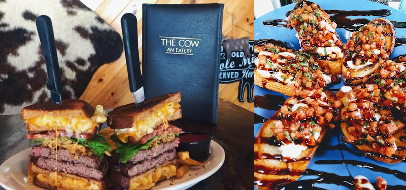

Ah But there is at 'The Cow: An Eatery' in morrison Colorado. And it's not a local myth or a secret menu. It's right on the menu: Linner. And the items are no joke. Like the 'Holy Cow Burger', a burger so formidable that those who can finish it earn a place amoung the 'Holy Cow Champions' on the website. Or how about an appetizer so big it will ruin your dinner, but make your linner, like the Buratta Crostini in this photo. To get you started I also list my top 3 items in order and 3 other standout favorites to look out for.
